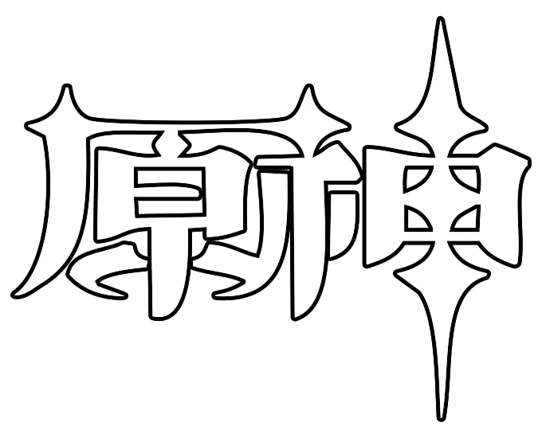

《明日方舟》的故事发生在一个架空世界中，有着与地球相似而又截然不同的环境，历史和文明。
这里的主要居民是带有各种动物特征的亚人类，而是否存在纯粹的“人类”，目前还不得而知。
天灾——表现为各种自然灾害的巨大灾难，是文明的大敌。
在它面前，所有的事物都不堪一击。
但在带来毁灭的同时，天灾也带来了源石：自然界能量结晶形成的神秘矿石。
源石的开发让文明进入了现代，建立起了以源石为基础的科技体系。
然而，源石开发中泄露的物质也催生了不详的矿石病患者：“感染者”。 他们无法被治愈，矿石会在他们身上逐渐扩散结晶，在杀死患者后进行二次扩散。
为此，感染者成为了被社会排斥的对象。
没有人能告诉矿石病患者要如何生存下去，于是其中具有天赋的他们，赌上各自的未来，誓要为世界带来震颤。
《原神》是由上海米哈游影铁科技有限公司制作发行的一款开放世界冒险游戏，于2017年1月底立项 [28] ，原初测试于2019年6月21日开启 [1]
，再临测试于2020年3月19日开启 [2] ，启程测试于2020年6月11日开启 [3] ，PC版技术性开放测试于9月15日开启，公测于2020年9月28日开启 [4]
。在数据方面，同在官方服务器的情况下，iOS、PC、Android平台之间的账号数据互通，玩家可以在同一账号下切换设备。
游戏发生在一个被称作“提瓦特”的幻想世界，在这里，被神选中的人将被授予“神之眼”，导引元素之力。玩家将扮演一位名为“旅行者”的神秘角色，在自由的旅行中邂逅性格各异、能力独特的同伴们，和他们一起击败强敌，找回失散的亲人——同时，逐步发掘“原神”的真相
[5] 。

-
蒙德
位于提瓦特大陆东北部的自由城邦。
群山和广袤的平原间，自由之风携着蒲公英的气息吹拂过果酒湖，
为坐落于湖心岛上的蒙德城送去风神巴巴托斯的祝福与恩泽。 -
璃月
位于提瓦特大陆东方的富饶港湾。
傲然矗立的山麓与石林、广袤的平原与生机勃勃的河滩共同构成了璃月的丰富地貌，在四季分明的
气候下焕发出多彩的风华。山石奇景间，又埋藏了多少岩之魔神的古老馈赠等待着人们发掘呢？
-
稻妻
位于提瓦特大陆远东的封闭群岛。
越过无尽的雷暴，踏上红枫与绯樱眷顾的诸岛，在环绕的砂堤、高耸的断崖与幽秘的山林之中，见
证御建鸣神主尊大御所大人所追寻的永恒。 -
须弥
位于提瓦特大陆中西部的学城之都。
同时拥有葱郁雨林与荒芜沙土的奇异国度，无数智慧的果实在这里生长、埋葬。无论是穿越丛林踏
上学城的台阶，还是深入沙漠挖掘赤土的遗迹，远道而来的旅者都可以在此获取宝贵的智识。 -
敬请期待
-

敬请期待
-
敬请期待